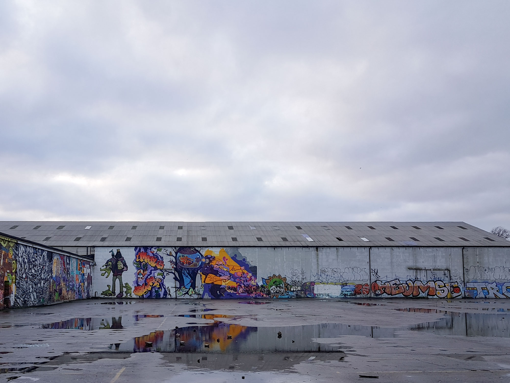
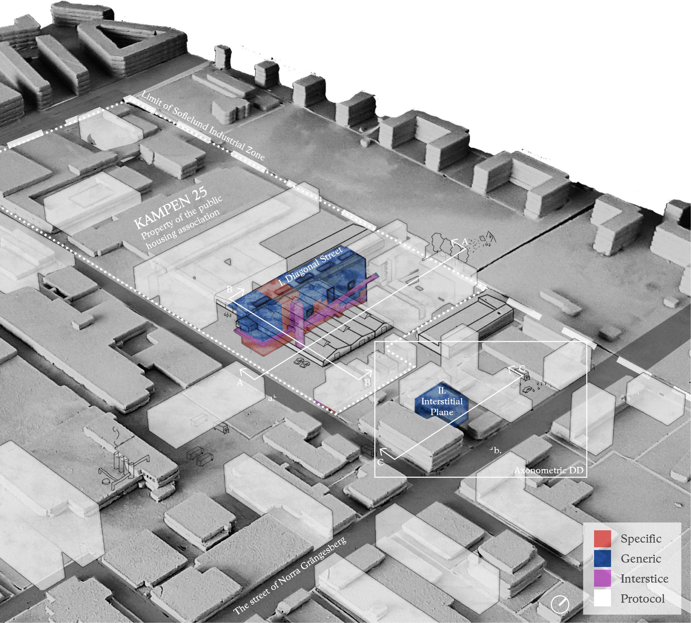
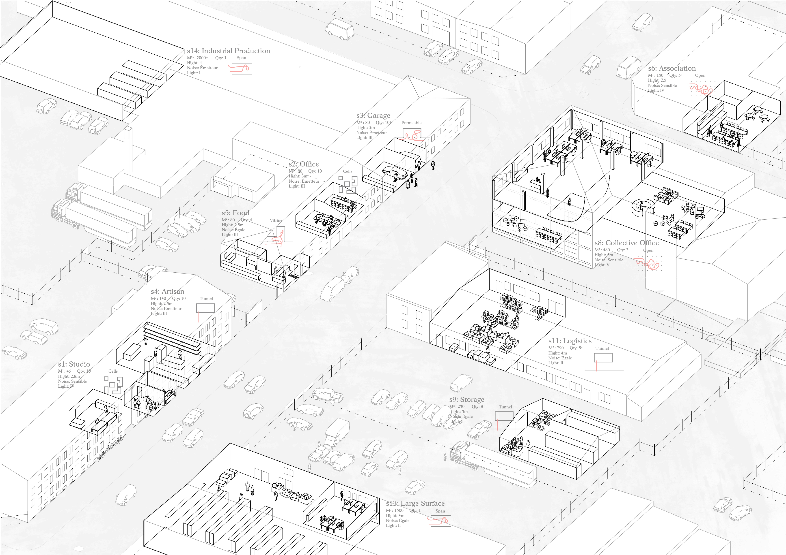
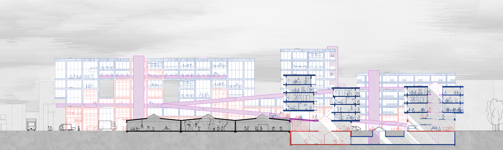

Interlocking City : A New Equilibrium for the Split City
Sofielund industrial zone has for long been in the peripheries of the city of Malmö, Sweden, but is today becoming an important economic, cultural and social potential with its low price on land, the new train stations and the numerous densification projects close by. The looming urban regeneration of the area puts on edge the policies, the framing, of the urban production:

Architecture is increasingly a speculative product that fails to meet the demands of society while being subjugated to the rapidly expanding economy. As the tools and languages of the local municipalities evolves towards a logic of expansion and international competition, other vital values of the everyday life are neglected or are not heard. The design practices can no longer content itself with just conceiving the city as a whole nor in withdrawing into the isolated conception of the architectural object.

Acting on the scales of urbanism and architecture, this project proposes instead a design approach of an active form. By defining a protocol, a new balance is expressed between the logics of:
. The generic city and its market-driven urbanization.
. The specificity of the local practices and their related spaces.
. The interstitial space that assures a temporality of use.

